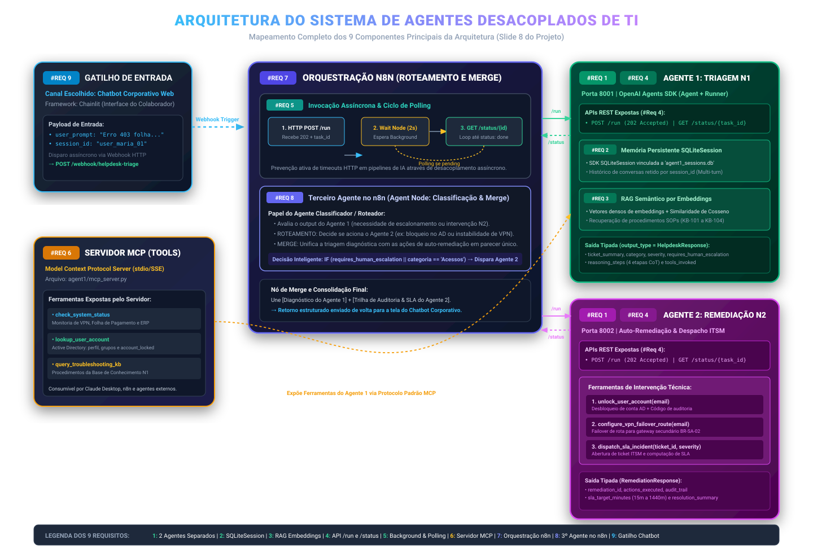

Conforme matriz de avaliação do Bloco (Slide 8) - Correção e Alinhamento Completo

| #Req | Componente do Sistema (Slide 8) | Implementação no Repositório | Responsabilidade Técnica |
|---|---|---|---|
| #1 | Dois agentes Python independentes | agent1/ e agent2/ |
Projetos e pastas desacopladas: Agente 1 (Triagem N1) e Agente 2 (Auto-Remediação N2 / ITSM). |
| #2 | Memória conversacional persistente com SQLiteSession | agent1/memory.py |
Implementada via agents.memory.SQLiteSession do OpenAI Agents SDK em agent1_sessions.db. |
| #3 | RAG e Embeddings para recuperação semântica | agent1/rag.py |
Busca vetorial por similaridade de cosseno com vetores densos de embeddings dos procedimentos SOP da KB. |
| #4 | APIs REST dos 2 agentes: /run e /status | agent1/app.py & agent2/app.py |
Endpoints FastAPI assíncronos: POST /run (retorna 202 com task_id) e GET /status/{task_id}. |
| #5 | Workflow n8n com invocação assíncrona e polling | workflows/tp3_full_orchestration_workflow.json |
Dispara /run, aguarda em nó Wait e realiza loop de polling em /status até conclusão da LLM. |
| #6 | Servidor MCP expondo ferramentas de ao menos um agente | agent1/mcp_server.py |
Servidor Model Context Protocol disponibilizando check_system_status, lookup_user_account e query_troubleshooting_kb. |
| #7 | Orquestração dos dois agentes no n8n com roteamento e merge | workflows/ |
Fluxo condicional If/Switch no n8n que conecta a saída da triagem ao disparo da remediação e unifica os resultados. |
| #8 | Terceiro agente dentro do n8n (Agent node) | Nó Agent no n8n | Agente LLM interno no n8n encarregado de classificar se o incidente exige remediação e orquestrar o merge. |
| #9 | Gatilho (trigger) que dispara o n8n | chatbot/app.py |
Chatbot Corporativo Web construído em Chainlit, atuando como canal único via Webhook HTTP. |